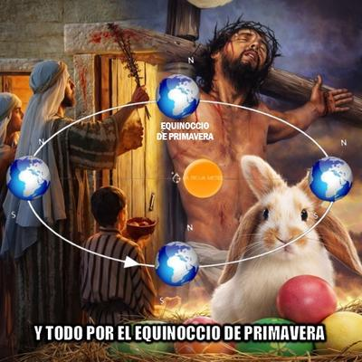

Este viernes 20 de marzo de 2026, se produce en el hemisferio norte de nuestro planeta el equinoccio de primavera: un momento astronómico en que el Sol cruza el ecuador celeste, y el día y la noche tienen aproximadamente la misma duración. Para la ciencia es un fenómeno perfectamente explicable por la inclinación del eje terrestre y el movimiento orbital de la Tierra. En la historia humana, en cambio, ha sido durante milenios una oportunidad para producir una mezcla casi delirante de mitos, rituales y supersticiones.


Se trata de un coctel cultural que desemboca hoy en celebraciones como la Pascua judía, la Semana Santa cristiana, y la curiosa fiesta anglosajona llamada Easter, donde conviven sin pudor exterminios infantiles, resurrecciones divinas, corderos sacrificiales, conejos mágicos y huevos de chocolate.
En efecto, en este 2026, la Pascua cristiana —llamada también «Domingo de Resurrección»— se celebrará el 5 de abril, precisamente después de la primera luna llena posterior al equinoccio. Se trata de una fecha que no corresponde a ningún acontecimiento histórico verificable, sino a un complejo cálculo religioso heredado de antiguas tradiciones agrícolas y astronómicas.
Pero desde la perspectiva antropológica, el origen de estas festividades es bastante sencillo. En las sociedades agrícolas antiguas, la llegada de la primavera significaba algo fundamental: el retorno de la vida tras el invierno. Los campos reverdecían, los animales se reproducían y la comida volvía a abundar. Era natural que los humanos interpretaran este fenómeno como una especie de «resurrección» de la naturaleza. Y por eso muchas culturas imaginaron deidades que morían y renacían cíclicamente, entre las cuales podemos mencionar a Ishtar, diosa mesopotámica del amor y la fertilidad; Astarté, su equivalente fenicio-cananeo, y Perséfone, la hija de Deméter en la mitología griega, cuya vuelta del inframundo simbolizaba el retorno de la primavera.
En estos mitos, la naturaleza misma se convertía en una narrativa religiosa: la tierra «moría» durante el invierno, y «resucitaba» cuando llegaban el calor y las lluvias. Así que cuando siglos más tarde una religión afirmó que su dios también moría y resucitaba justo en esta época del año, la idea no resultó tan extraña como podría pensarse.
En el caso del judaísmo, la fiesta primaveral se llama Pésaj, palabra hebrea que significa «pasar de largo». Y es que según el relato del libro del Éxodo (que afortunadamente no es verídico), el dios de los hebreos —Yahvé— decidió un día castigar a los egipcios con la aniquilación de todos sus primogénitos. Así que para evitar «confusiones» en la noche de la matanza, ordenó a los israelitas sacrificar un cordero y marcar con su sangre el dintel de sus casas. De esta forma la divinidad —omnisciente como era— sabría por cuáles viviendas debía pasar de largo… y cuáles debía visitar para exterminar a los niños primogénitos.
El episodio es narrado en el libro bíblico del Éxodo (Éxodo 12:12-29), como supuesta demostración del poder divino. Aunque desde un punto de vista moderno, resulta ser más bien un relato repulsivo: una deidad omnisciente y omnipotente que necesita señales de sangre en las puertas para reconocer a su propio pueblo, mientras procede a ejecutar una matanza despiadada de niños y animales inocentes. Y lo más sorprendente es que, según la tradición, aquel episodio sangriento debía conmemorarse cada año durante siete días, dando origen así a la Pascua judía (Éxodo 12:14).
Pero otro dato interesante es que, según los evangelios, tanto Jesús como su familia y sus discípulos, celebraban aquella misma terrorífica fiesta judía, que posteriormente a la ejecución de Jesús ocurrida durante la misma festividad (Lucas 22:7-15), fue reinterpretada por sus seguidores como un sacrificio simbólico comparable al del cordero pascual que era inmolado en el altar para conmemorar el trágico episodio de los primogénitos. De ahí la imagen teológica de «Cristo» como «cordero de Dios». Y con el tiempo, la historia fue adaptándose hasta dar forma a la «Semana Santa», que culmina en el «Domingo de Resurrección».
Pero surge aquí otro detalle curioso: la fecha de la supuesta resurrección de Jesús no se fija por calendario histórico, sino sólo por un cálculo astronómico establecido siglos después por la Iglesia romana. Se trata de un sistema que fue formalizado en el Concilio de Nicea del año 325, convocado por el emperador Constantino, que decidió que la Pascua cristiana debía ser celebrada el primer domingo después de la primera luna llena posterior al equinoccio de primavera. Y así, un evento supuestamente histórico, terminó dependiendo de una fase lunar.
Como vemos, un fenómeno astronómico cíclico tan natural como el Equinoccio de Primavera, nos ha producido hasta aquí una mezcla ya de por sí curiosa: una fiesta agrícola primaveral, una matanza bíblica conmemorativa, y la ejecución de un predicador judío reinterpretada como sacrificio divino. Sin embargo, la historia puede volverse todavía más surrealista: en el mundo germánico y anglosajón, la primavera también estaba asociada a símbolos de fertilidad, surgiendo allí dos de los protagonistas más extravagantes de la Pascua moderna: los huevos de Pascua, y los conejos o liebres.
El huevo simbolizaba el nacimiento y la renovación de la vida, mientras que la liebre y el conejo eran animales conocidos por su extraordinaria capacidad reproductiva. Después, la tradición popular terminó fusionando ambos símbolos, hasta producir una criatura digna de un cuento para niños: el conejo de Pascua que trae huevos. En inglés esta celebración se llama Easter, nombre que muchos relacionan con antiguas divinidades de la primavera, como Astarté, o con la diosa germánica Eostre. Y así, una fiesta religiosa que pretende celebrar la resurrección de un dios judío, terminó adornada con símbolos paganos de fertilidad.
Pero si toda esta mezcla ya parece suficientemente extravagante, el siglo XX añadió un ingrediente final: el mercado. Aquel símbolo de renacimiento o vida que era el huevo, terminó convertido en un producto comercial muy vendido en esta época: los actuales huevos de Pascua, que son tradicionales en Semana Santa, y que se supone simbolizan la vida, la fertilidad y la resurrección en la tradición cristiana. Pero se trata ahora de huevos de chocolate, que se venden en gran parte del mundo: desde Alemania y Polonia hasta México, Brasil, Argentina, Chile o España. Aunque en muchos de estos lugares, el significado religioso es secundario o inexistente; lo importante es el intercambio de dulces.
En otras palabras, una festividad que comenzó con sacrificios rituales y relatos de exterminios divinos, quedó convertida en excusa para comer chocolate con forma de huevo, puesto por un conejo imaginario.
Y entonces, mientras el equinoccio de primavera ocurre este 20 de marzo, la maquinaria simbólica que culminará el 5 de abril con el Domingo de Resurrección ya está en marcha. Pero desde una perspectiva antropológica lo que observamos no es una tradición pura ni coherente, sino un interesante ejemplo de cómo las culturas humanas superponen mitos sobre mitos: festividades agrícolas prehistóricas, dioses de fertilidad del antiguo Oriente, relatos bíblicos de sacrificios y plagas, teología cristiana medieval, hasta finalmente marketing moderno. Todo ello convive ahora alegremente bajo un mismo paraguas simbólico.
De esta forma, cada primavera, la humanidad repite uno de los espectáculos culturales más curiosos de su historia: celebrar simultáneamente un equinoccio astronómico, una antigua matanza bíblica (que afortunadamente no existió), y la supuesta resurrección de un dios… todo junto con la generosidad de un conejo que reparte huevos… ahora de chocolate.
[Godless Freeman]
Comentarios
Comments powered by Disqus